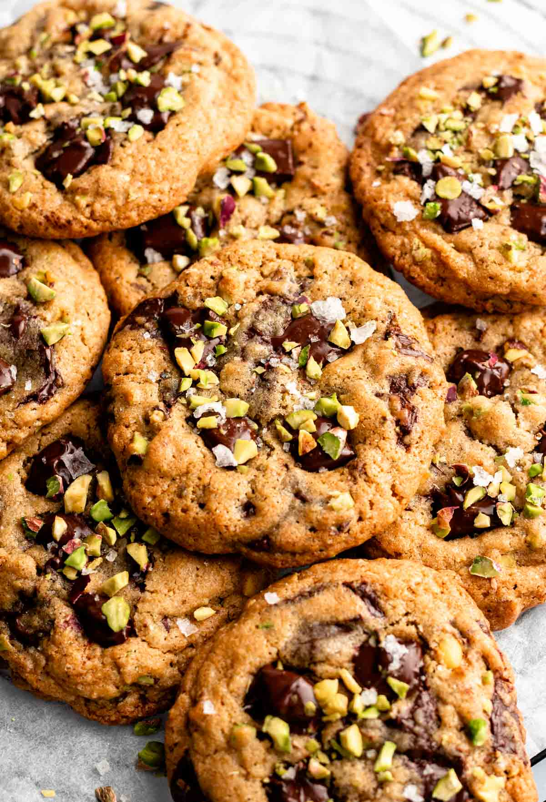

Chocolate Chip Pistachio Cookies

Description
Indulge in these delectable pistachio cookies, crafted from a
chocolate chip cookie foundation, generously filled with chopped
pistachios and dark chocolate chunks, and adorned with a sprinkle of flaky
salt. This irresistible recipe boasts a chewy and soft center,
complemented by a crispy and delightful outer layer. A must-try for those
who adore the harmonious combination of chocolate chips and pistachios!
Ingredients
- 115 g butter, softened
- 1/2 cup brown sugar, dark or light
- 1/2 cup granulated sugar
- 1 teaspoon vanilla extract
- 1/2 teaspoon kosher salt
- 1 egg
- 1 egg yolk
- 1/2 teaspoon baking soda
- 1 1/2 cup all-purpose flour
- 1 tablespoon cornstarch
- 3/4 cup pistachios, chopped
- 1 cup chocolate chunks
Steps
-
Into a big mixing bowl, add the room temperature butter, sugar, brown
sugar, kosher salt, and vanilla extract, and cream it with an electric
hand mixer for 2-3 minutes or until it's creamy and light in color. Add
the eggs and the egg yolk, and mix until combined and creamy.
-
Then, add the flour, cornstarch, and baking soda, and mix with the hand
mixer until almost combined.Add the chocolate chunks and chopped
pistachios and mix until just combined.
-
Cover the bowl with plastic wrap and let the dough rest in the fridge
for at least an hour.
-
Use a large cookie scooper to scoop out the cookies or scoop the cookies
with a regular tablespoon, 3 tablespoons at a time. Place the cookie
dough balls onto a parchment paper-lined baking sheet and bake in a 350f
preheated oven for 10-12 minutes.
-
Immediately top them with more chocolate chunks Let the cookies cool for
5 minutes, and then transfer them to a wire rack to cool completely.
Back to Homepage